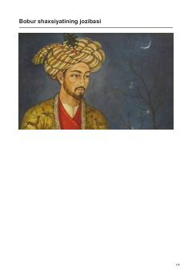

BSZahiriddin Muhammad Bobur hayoti va merosiga bag'ishlangan ma'rifiy-tarixiy asar.
Ushbu kitob taniqli adib Xayriddin Sultonning ijodi va Zahiriddin Muhammad Bobur shaxsi hamda uning boy merosiga bag'ishlangan ma'rifiy asardir. Unda boburiylar sulolasi tarixi, ekspeditsiya taassurotlari va tarixiy shaxslarning ibratli hayot yo'li badiiy talqin etilgan.